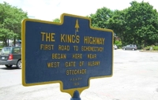

|
by
This overland thoroughfare connecting the Hudson and the Mohawk was in existence from the earliest days of the community and was first used by Native American hunters bringing their furs to Beverwyck and, after 1664, to Albany. Until the mid-18th century, the Kings Highway was little more than a path through the woods. It was described by traveller Dr. Alexander Hamilton in 1744 thus: "These woods form a copse above your head almost all the way betwixt Albany and Schenectady, and you ride over a plain, level, sandy road till (sic), coming out of the covert of the woods, all att (sic) once the village strikes surprisingly (sic) your eye, which I can compare to nothing but the curtain rising in a play and displaying a beautiful scene.” But this path was improved dramatically by British and provincial soldiers during the last of the colonial wars. After the war, many new settlers were travelling west from Albany over this road. By that time, the western parts of it were maintained under contract with the Albany city government. On the Albany end, the Kings Highway began at the Schenectady gate of the stockade and continued west - uphill and into the pine barrens along the route of today's Washington Avenue. The detail shown on the left is from a map of Rensselaerswyck made in 1767. It clearly traces the overland route from Albany (according to the map's legend) - past Christie's at Sandy Hill (#64) - west to "John Ritchie's at the Kil" (#65) - then to "the Verbergh" (#66) - then west to Isaac Truax's tavern (#69) near the northern border of Rensselaerswyck, and finally the last seven or so miles west to Schenectady. At Schenectady, the wildnerness path became the budding community's main street (today's State Street). At the Schenectady end of the Kings Highway, cargoes and travellers would then be loaded onto boats and moved west along the Mohawk into the Iroquois country and beyond. Mostly along the road and just above the densely settled part of the eighteenth century city a number of newcomer Scots had taken up residence by the latter stages of the War for Independence. By 1788, these highlanders had opened their homes to recently arrived boarders. Buildings began to dot the way along Lion Street - the western extension of State Street above the rapidly deteoriating ruins of the fort and the newly laid out public square. John Monier's lumber yard and Bromley's inn were part of this development. These properties were shown on the maps made by Simeon De Witt during the 1790s. By 1790, the tavern of newcomer William Mc Kown was a fixture in the vicinity of today's Fuller Road. In 1787, the city Council authorized repairs to the road from Albany to Mc Kown's "five mile house" and from Mc Kown's to Schenectady.
Online resources of value: APBPC; Don Rittner on roads and paving; Map detail showing the road from Albany to "the Verbergh." From a map of Rensselaerswyck made by John R. Bleecker in 1767. The most frequently encountered version (and the one used here) is copied from an engraving printed in the Documentary History of New York, III, 916-17. An image map further articulates this important resources. Legendary: A term of convenience used frequently at the Colonial Albany Social History Project to help diffuse emotions surrounding "folk" understandings of events and ideas of and about the past. 
Photo of a sandy road in the Albany pine barrens probably taken during the 1970s and copied from Don Rittner, Pine Bush: Albany's Last Frontier (Albany, 1976). The 18th century road to Schenectady probably looked something like the road in this modern photo. Modern photo of the historic marker located next to today's Albany city hall. Borrowed from an online photo exposition entitled Albany Daily Photo. Follow the route using this compelling online photo essay. Early in 2011, I noticed a dramatic increase of online expositions that help explicate the "Kings Highway." Almost can't believe that this classic is now two decades old. Rock on everyone!
The Schenectady gate is upper #11 on the
Miller Map of Albany dated 1695. Detail from the John
R. Bleecker map of 1767 showing the road from "the Verbergh"
(#66 - in the lower right-hand corner of the detail) to Isaac Truax's
tavern (#69) just inside the northern border of Rensselaerswyck,
and continuing west to Schenectady on the Mohawk River. Note the
Mohawk river road leading to Schenectady from the east.
|

{kind=link}